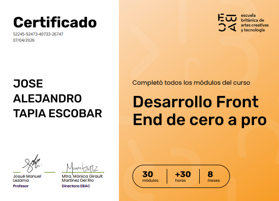
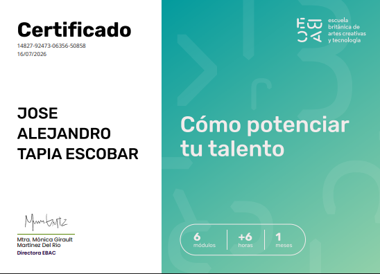

Formación y aprendizaje continuo
Certificaciones que respaldan mi desarrollo profesional
Aquí documento los cursos, conocimientos y competencias técnicas que he adquirido durante mi preparación en desarrollo Front-End, bases de datos y tecnologías de software.
Competencias técnicas
Tecnologías estudiadas
Estas son algunas de las tecnologías, herramientas y conceptos adquiridos durante mi formación y aplicados en proyectos personales.
HTML5
CSS3
Sass
JavaScript
React
Node.js
Git
GitHub
Responsive Design
SQL
SQL Server
DOM
Aprendizaje continuo
Certificaciones destacadas
Cursos completados como parte de mi preparación profesional en desarrollo de software.

EBAC
Desarrollo Front-End de Cero a Profesional
Formación orientada a la creación de interfaces y aplicaciones web mediante tecnologías Front-End, diseño responsive, control de versiones y desarrollo de proyectos prácticos.
- Institución
- EBAC
- Categoría
- Desarrollo Front-End
- Modalidad
- Formación en línea
- Estado
- Curso completado
Competencias desarrolladas
- HTML5
- CSS3
- Sass
- JavaScript
- Git
- GitHub
- Diseño responsive
- Manipulación del DOM

EBAC
Cómo potenciar tu talento
Programa de desarrollo profesional enfocado en fortalecer habilidades para la empleabilidad, construcción de marca personal, preparación para el mercado laboral y desarrollo de una mentalidad orientada al crecimiento profesional y al emprendimiento.
- Institución
- EBAC
- Categoría
- Desarrollo Profesional
- Modalidad
- Formación en línea
- Estado
- Curso completado
Competencias desarrolladas
- Marca personal (Personal Branding).
- Empleabilidad.
- Desarrollo profesional.
- Networking.
- Planeación de carrera.
- Emprendimiento.
- Habilidades de comunicación.
- Crecimiento profesional.

Microsoft / Coursera
Microsoft Azure Fundamentals AZ-900 Exam Prep
Especialización compuesta por cuatro cursos orientada a preparar el examen AZ-900. Abarca los fundamentos de Microsoft Azure, servicios en la nube, herramientas de administración, seguridad, gobernanza, administración de costos y acuerdos de nivel de servicio (SLA).
- Institución
- Microsoft / Coursera
- Categoría
- Cloud Computing
- Modalidad
- Formación en línea
- Estado
- Curso completado
Competencias desarrolladas
- Microsoft Azure
- Cloud Computing
- Azure Services
- Azure Security
- Azure Governance
- Cost Management

Microsoft / Coursera
Introduction to Microsoft Azure Cloud Services
Introducción a los conceptos fundamentales del Cloud Computing y los principales servicios que ofrece Microsoft Azure, incluyendo infraestructura, plataformas y modelos de implementación en la nube.
- Institución
- Microsoft / Coursera
- Categoría
- Cloud Computing
- Modalidad
- Formación en línea
- Estado
- Curso completado
Competencias desarrolladas
- Azure
- Cloud Fundamentals
- IaaS
- PaaS
- SaaS

Microsoft / Coursera
Microsoft Azure Services and Lifecycles
urso enfocado en los servicios principales de Azure, el ciclo de vida de los recursos en la nube, disponibilidad, escalabilidad y administración de servicios.
- Institución
- Microsoft / Coursera
- Categoría
- Cloud Computing
- Modalidad
- Formación en línea
- Estado
- Curso completado
Competencias desarrolladas
- Azure Services
- Resource Management
- High Availability
- Scalability

Microsoft / Coursera
Microsoft Azure Management Tools and Security Solutions
Formación sobre herramientas de administración de Azure, soluciones de seguridad, monitoreo, control de acceso, identidad y mejores prácticas para proteger recursos en la nube.
- Institución
- Microsoft / Coursera
- Categoría
- Cloud Computing
- Modalidad
- Formación en línea
- Estado
- Curso completado
Competencias desarrolladas
- Azure Security
- Azure Monitor
- Microsoft Entra ID
- RBAC
- Security Center

IBM / Coursera
Introduction to HTML, CSS & JavaScript
Curso introductorio al desarrollo web que cubre la estructura de páginas con HTML, estilos con CSS y programación interactiva utilizando JavaScript.
- Institución
- IBM / Coursera
- Categoría
- Web Design
- Modalidad
- Formación en línea
- Estado
- Curso completado
Competencias desarrolladas
- HTML5
- CSS3
- JavaScript
- Responsive Design

IBM / Coursera
Getting Started with Git and GitHub
Curso enfocado en el control de versiones utilizando Git y GitHub. Incluye manejo de repositorios, ramas, commits, colaboración y flujo de trabajo profesional.
- Institución
- IBM / Coursera
- Categoría
- Web Design
- Modalidad
- Formación en línea
- Estado
- Curso completado
Competencias desarrolladas
- Git
- GitHub
- Version Control
- Branching
- Pull Requests

IBM / Coursera
Developing Front-End Apps with React
Curso dedicado al desarrollo de aplicaciones Front-End modernas utilizando React. Incluye componentes, manejo de estado, propiedades, eventos y construcción de interfaces reutilizables.
- Institución
- IBM / Coursera
- Categoría
- Web Design
- Modalidad
- Formación en línea
- Estado
- Curso completado
Competencias desarrolladas
- React
- JSX
- Components
- State Management
- Front-End Development
Aprendizaje continuo
Mi trayectoria de formación
Un recorrido por las áreas técnicas que he estudiado, los conocimientos que continúo fortaleciendo y mis siguientes objetivos profesionales.
Completado
Desarrollo web
Desarrollo Front-End de Cero a Profesional
Formación en HTML, CSS, Sass, JavaScript, diseño responsive, Git, GitHub y desarrollo de proyectos web.
En formación
Bases de datos
SQL para análisis de datos
Preparación enfocada en consultas SQL, relaciones, uniones, agrupaciones, subconsultas, vistas y análisis de información con SQL Server.
Próximo objetivo
Cloud computing
Fundamentos de AWS
Próxima etapa de formación orientada a servicios en la nube, infraestructura, despliegue de aplicaciones y fundamentos de arquitectura cloud.
Perfil profesional
Sobre este repositorio
Este sitio reúne evidencia de mi formación profesional y aprendizaje continuo. Cada certificación representa el desarrollo de conocimientos aplicados mediante prácticas, ejercicios y proyectos técnicos.